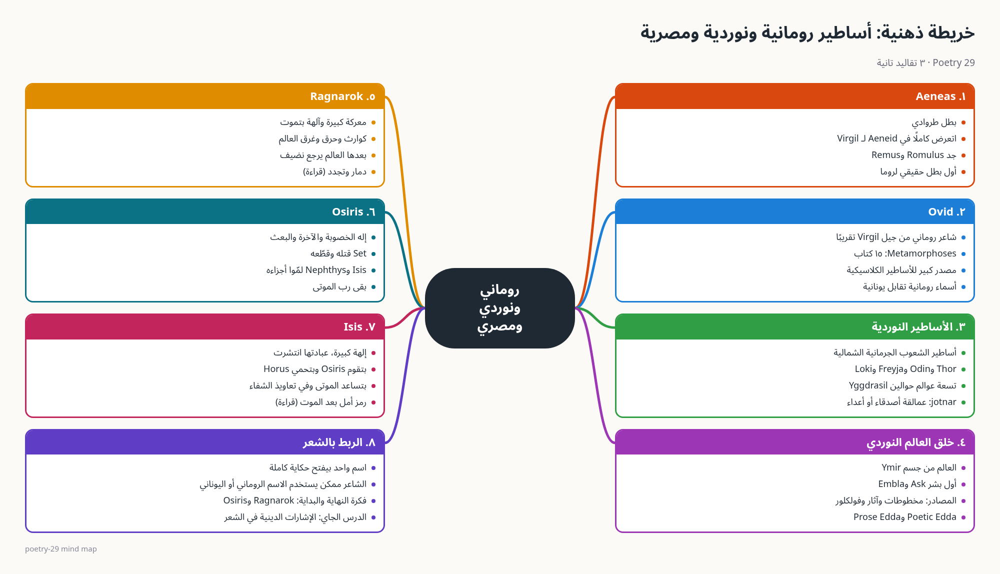

آداب الإنجليزية
: قواعد وجرامر وشعر وأساطير
⭐
0
🔥
استمر!
🌍
الدرس ٢٩: أساطير رومانية وإسكندنافية ومصرية
📊
المستوى: C1
الدرس 29 من 29
📖
كورس الشعر
📄 حمّل PDF الدرس
🎧 حمّل تسجيل الدرس كامل (MP3 · 2 MB)
📝 ملخص الدرس (عربي) PDF
📝 Lesson Summary (English) PDF
🧠 الخريطة الذهنية PDF
🧠 شوف الخريطة الذهنية للدرس

→
الدرس اللي قبله
كل دروس الكورس
الدرس اللي بعده
←